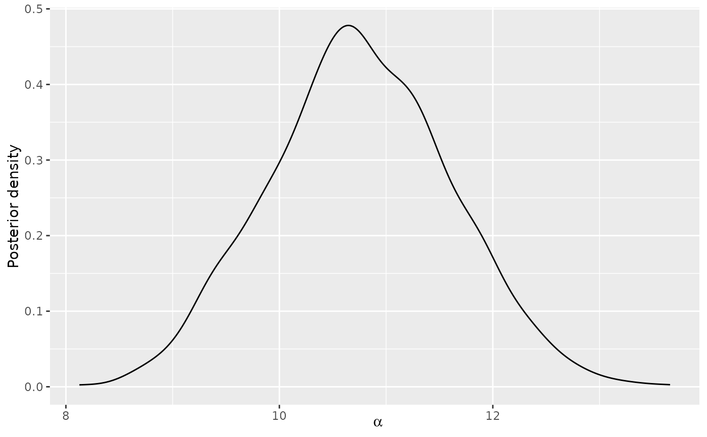
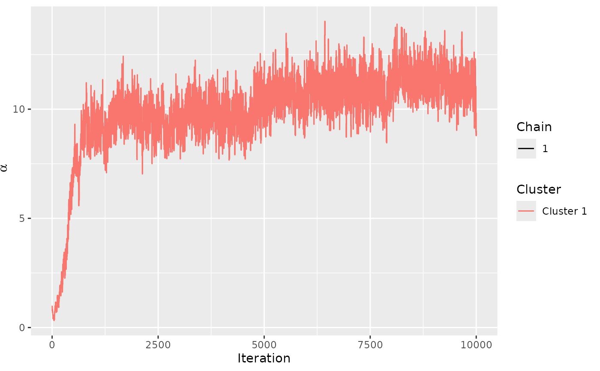
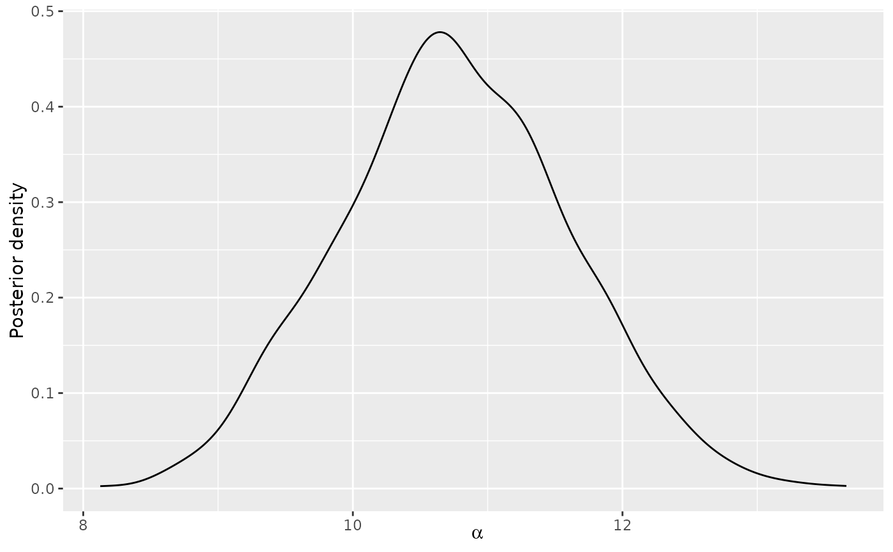
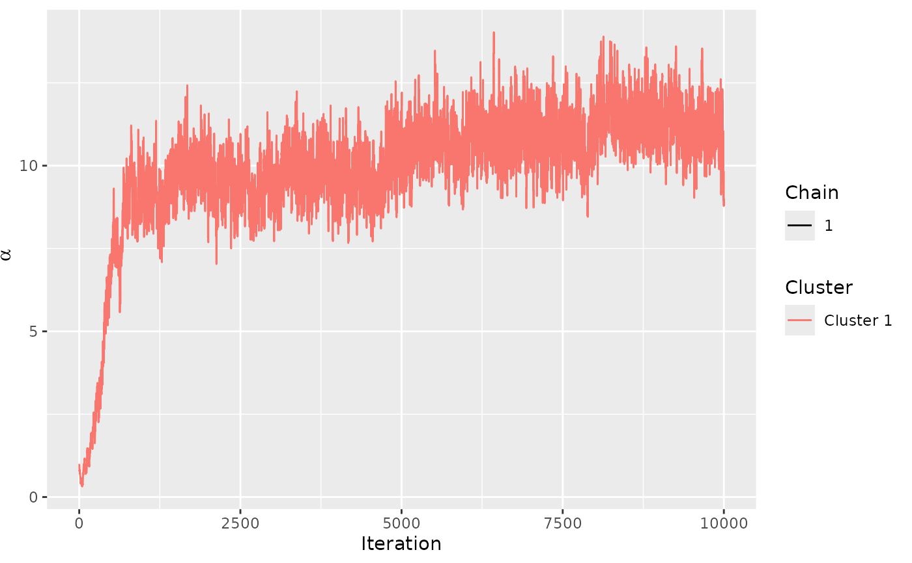

Update a Bayesian Mallows model estimated using the Metropolis-Hastings
algorithm in compute_mallows() using the sequential Monte Carlo algorithm
described in
Stein (2023)
.
Usage
update_mallows(model, new_data, ...)
# S3 method for BayesMallows
update_mallows(
model,
new_data,
model_options = set_model_options(),
smc_options = set_smc_options(),
compute_options = set_compute_options(),
priors = model$priors,
...
)
# S3 method for SMCMallows
update_mallows(model, new_data, ...)Arguments
- model
A model object of class "BayesMallows" returned from
compute_mallows()or an object of class "SMCMallows" returned from this function.- new_data
An object of class "BayesMallowsData" returned from
setup_rank_data(). The object should contain the new data being provided.- ...
Optional arguments. Currently not used.
- model_options
An object of class "BayesMallowsModelOptions" returned from
set_model_options().- smc_options
An object of class "SMCOptions" returned from
set_smc_options().- compute_options
An object of class "BayesMallowsComputeOptions" returned from
set_compute_options().- priors
An object of class "BayesMallowsPriors" returned from
set_priors(). Defaults to the priors used inmodel.
See also
Other modeling:
compute_mallows_mixtures(),
compute_mallows()
Examples
set.seed(1)
# UPDATING A MALLOWS MODEL WITH NEW COMPLETE RANKINGS
# Assume we first only observe the first four rankings in the potato_visual
# dataset
data_first_batch <- potato_visual[1:4, ]
# We start by fitting a model using Metropolis-Hastings
mod_init <- compute_mallows(
data = setup_rank_data(data_first_batch),
compute_options = set_compute_options(nmc = 10000))
# Convergence seems good after no more than 2000 iterations
assess_convergence(mod_init)
 mod_init$burnin <- 2000
# Next, assume we receive four more observations
data_second_batch <- potato_visual[5:8, ]
# We can now update the model using sequential Monte Carlo
mod_second <- update_mallows(
model = mod_init, new_data = setup_rank_data(rankings = data_second_batch))
# This model now has a collection of particles approximating the posterior
# distribution after the first and second batch
# We can use all the posterior summary functions as we do for the model
# based on compute_mallows():
plot(mod_second)
mod_init$burnin <- 2000
# Next, assume we receive four more observations
data_second_batch <- potato_visual[5:8, ]
# We can now update the model using sequential Monte Carlo
mod_second <- update_mallows(
model = mod_init, new_data = setup_rank_data(rankings = data_second_batch))
# This model now has a collection of particles approximating the posterior
# distribution after the first and second batch
# We can use all the posterior summary functions as we do for the model
# based on compute_mallows():
plot(mod_second)
 plot(mod_second, parameter = "rho", items = 1:4)
compute_posterior_intervals(mod_second)
#> parameter mean median hpdi central_interval
#> 1 alpha 11.414 11.373 [9.181,13.840] [9.189,13.843]
# Next, assume we receive the third and final batch of data. We can update
# the model again
data_third_batch <- potato_visual[9:12, ]
mod_final <- update_mallows(
model = mod_second, new_data = setup_rank_data(rankings = data_third_batch))
# We can plot the same things as before
plot(mod_final)

compute_consensus(mod_final)
#> cluster ranking item cumprob
#> 1 Cluster 1 1 P12 1.000
#> 2 Cluster 1 2 P13 0.999
#> 3 Cluster 1 3 P9 0.979
#> 4 Cluster 1 4 P10 0.549
#> 5 Cluster 1 5 P17 0.926
#> 6 Cluster 1 6 P7 0.685
#> 7 Cluster 1 7 P14 1.000
#> 8 Cluster 1 8 P16 0.939
#> 9 Cluster 1 9 P1 0.483
#> 10 Cluster 1 10 P5 0.700
#> 11 Cluster 1 11 P11 0.964
#> 12 Cluster 1 12 P19 0.996
#> 13 Cluster 1 13 P18 0.633
#> 14 Cluster 1 14 P20 0.998
#> 15 Cluster 1 15 P6 0.943
#> 16 Cluster 1 16 P4 0.650
#> 17 Cluster 1 17 P2 0.748
#> 18 Cluster 1 18 P15 1.000
#> 19 Cluster 1 19 P3 0.999
#> 20 Cluster 1 20 P8 1.000
# UPDATING A MALLOWS MODEL WITH NEW OR UPDATED PARTIAL RANKINGS
# The sequential Monte Carlo algorithm works for data with missing ranks as
# well. This both includes the case where new users arrive with partial ranks,
# and when previously seen users arrive with more complete data than they had
# previously.
# We illustrate for top-k rankings of the first 10 users in potato_visual
potato_top_10 <- ifelse(potato_visual[1:10, ] > 10, NA_real_,
potato_visual[1:10, ])
potato_top_12 <- ifelse(potato_visual[1:10, ] > 12, NA_real_,
potato_visual[1:10, ])
potato_top_14 <- ifelse(potato_visual[1:10, ] > 14, NA_real_,
potato_visual[1:10, ])
# We need the rownames as user IDs
(user_ids <- rownames(potato_visual[1:10, ]))
#> [1] "A1" "A2" "A3" "A4" "A5" "A6" "A7" "A8" "A9" "A10"
# First, users provide top-10 rankings
mod_init <- compute_mallows(
data = setup_rank_data(rankings = potato_top_10, user_ids = user_ids),
compute_options = set_compute_options(nmc = 10000))
# Convergence seems fine. We set the burnin to 2000.
assess_convergence(mod_init)

mod_init$burnin <- 2000
# Next assume the users update their rankings, so we have top-12 instead.
mod1 <- update_mallows(
model = mod_init,
new_data = setup_rank_data(rankings = potato_top_12, user_ids = user_ids)
)
plot(mod1)
# Then, assume we get even more data, this time top-14 rankings:
mod2 <- update_mallows(
model = mod1,
new_data = setup_rank_data(rankings = potato_top_14, user_ids = user_ids)
)
plot(mod2)
# Finally, assume a set of new users arrive, who have complete rankings.
potato_new <- potato_visual[11:12, ]
# We need to update the user IDs, to show that these users are different
(user_ids <- rownames(potato_new))
#> [1] "A11" "A12"
mod_final <- update_mallows(
model = mod2,
new_data = setup_rank_data(rankings = potato_new, user_ids = user_ids)
)
plot(mod_final)
plot(mod_second, parameter = "rho", items = 1:4)
compute_posterior_intervals(mod_second)
#> parameter mean median hpdi central_interval
#> 1 alpha 11.414 11.373 [9.181,13.840] [9.189,13.843]
# Next, assume we receive the third and final batch of data. We can update
# the model again
data_third_batch <- potato_visual[9:12, ]
mod_final <- update_mallows(
model = mod_second, new_data = setup_rank_data(rankings = data_third_batch))
# We can plot the same things as before
plot(mod_final)

compute_consensus(mod_final)
#> cluster ranking item cumprob
#> 1 Cluster 1 1 P12 1.000
#> 2 Cluster 1 2 P13 0.999
#> 3 Cluster 1 3 P9 0.979
#> 4 Cluster 1 4 P10 0.549
#> 5 Cluster 1 5 P17 0.926
#> 6 Cluster 1 6 P7 0.685
#> 7 Cluster 1 7 P14 1.000
#> 8 Cluster 1 8 P16 0.939
#> 9 Cluster 1 9 P1 0.483
#> 10 Cluster 1 10 P5 0.700
#> 11 Cluster 1 11 P11 0.964
#> 12 Cluster 1 12 P19 0.996
#> 13 Cluster 1 13 P18 0.633
#> 14 Cluster 1 14 P20 0.998
#> 15 Cluster 1 15 P6 0.943
#> 16 Cluster 1 16 P4 0.650
#> 17 Cluster 1 17 P2 0.748
#> 18 Cluster 1 18 P15 1.000
#> 19 Cluster 1 19 P3 0.999
#> 20 Cluster 1 20 P8 1.000
# UPDATING A MALLOWS MODEL WITH NEW OR UPDATED PARTIAL RANKINGS
# The sequential Monte Carlo algorithm works for data with missing ranks as
# well. This both includes the case where new users arrive with partial ranks,
# and when previously seen users arrive with more complete data than they had
# previously.
# We illustrate for top-k rankings of the first 10 users in potato_visual
potato_top_10 <- ifelse(potato_visual[1:10, ] > 10, NA_real_,
potato_visual[1:10, ])
potato_top_12 <- ifelse(potato_visual[1:10, ] > 12, NA_real_,
potato_visual[1:10, ])
potato_top_14 <- ifelse(potato_visual[1:10, ] > 14, NA_real_,
potato_visual[1:10, ])
# We need the rownames as user IDs
(user_ids <- rownames(potato_visual[1:10, ]))
#> [1] "A1" "A2" "A3" "A4" "A5" "A6" "A7" "A8" "A9" "A10"
# First, users provide top-10 rankings
mod_init <- compute_mallows(
data = setup_rank_data(rankings = potato_top_10, user_ids = user_ids),
compute_options = set_compute_options(nmc = 10000))
# Convergence seems fine. We set the burnin to 2000.
assess_convergence(mod_init)

mod_init$burnin <- 2000
# Next assume the users update their rankings, so we have top-12 instead.
mod1 <- update_mallows(
model = mod_init,
new_data = setup_rank_data(rankings = potato_top_12, user_ids = user_ids)
)
plot(mod1)
# Then, assume we get even more data, this time top-14 rankings:
mod2 <- update_mallows(
model = mod1,
new_data = setup_rank_data(rankings = potato_top_14, user_ids = user_ids)
)
plot(mod2)
# Finally, assume a set of new users arrive, who have complete rankings.
potato_new <- potato_visual[11:12, ]
# We need to update the user IDs, to show that these users are different
(user_ids <- rownames(potato_new))
#> [1] "A11" "A12"
mod_final <- update_mallows(
model = mod2,
new_data = setup_rank_data(rankings = potato_new, user_ids = user_ids)
)
plot(mod_final)